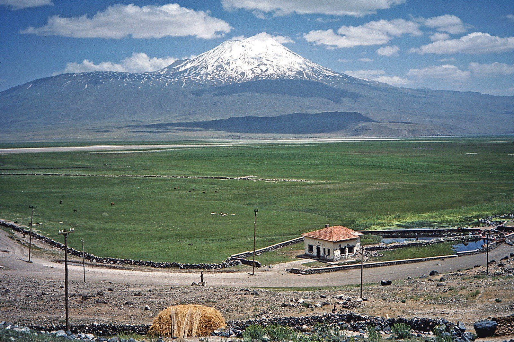

Did archaeologists just find Noah's Ark? What the new dig near Ararat actually found
SEPTEMBER 23, 2026

A reader sent over a story about a new dig at the boat-shaped Durupınar formation and asked what's actually been found so far
“This article says researchers found new evidence near Mount Ararat — is this it? Did they find Noah's Ark?”
The short answer. Not yet, and the researchers themselves aren't claiming that. A team from Sivas Cumhuriyet University led by Prof. Dr. Cenker Atila just finished a roughly 90-day field season at the Durupınar formation, a boat-shaped ridge in Ağrı Province, eastern Türkiye, about 29 kilometers south of Mount Ararat's summit. They collected soil and core samples, ran ground-penetrating radar over the formation, and reported carbon readings inside it running about 40% higher than outside it — along with radar anomalies the team describes as possible voids with unusually regular, right-angled edges.[1] None of that is wood, and none of it is dated yet. Lab results are expected this coming winter, with fuller findings promised for 2027. What follows is what was actually reported, plus the sixty-five years of back-and-forth this specific site has already been through — so a reader coming back when the lab results land has the whole record in one place.
What the 2026 season actually reported
The field team — about 20 researchers from five countries — worked the site from late June into September, alongside the nearby Kazan village site where the so-called Drogue Stones sit.[1] The tally, as reported: roughly 1,000 soil samples pulled from about 150 locations across the formation, core samples sent to laboratories in Ankara for analysis, and pottery fragments recovered whose age “has not yet been established through laboratory analysis.” The carbon reading is the headline number — interior samples running about 40% higher than samples taken outside the formation — and Atila's own framing of it is notably careful: “The elevated levels might be associated with organic material, potentially including wood,” he said, adding that “the team will concentrate on organic material and possible wood remains, with laboratory results expected to clarify the nature of the materials recovered.”[1] Might be associated with is doing real work in that sentence; elevated carbon has plenty of ordinary explanations in soil this old, and the team is treating it as a lead to test, not a result.
The radar findings are reported the same way — as anomalies, not identifications. Ground-penetrating radar detected features beneath the formation that the team calls “possible voids and anomalies with relatively regular edges,” some “appearing to intersect at right angles.”[1] A right angle under a formation whose whole claim to fame is looking man-made is the kind of detail a report like this is built to highlight, and it may turn out to mean something. It's also exactly the kind of reading a geologically layered, faulted ridge can produce on its own, which is precisely the argument this site's critics have been making since the 1990s (below). Nothing in what's been reported so far distinguishes between those two explanations. That's what the winter lab results are supposed to help do.
The formation's own contested history
This isn't a new site, and it isn't the first time it's made news. A Kurdish shepherd, Reshit Sarihan, reportedly noticed the ridge in 1948 after heavy rain and a regional earthquake; Turkish Army Captain İlhan Durupınar photographed it from the air in 1959 on a NATO mapping run, and it's carried his name since.[2] A 1960 expedition dug into it and even used dynamite, and concluded there were “no visible archaeological remains” — a “freak of nature,” not a structure. That verdict didn't stick culturally. Ron Wyatt, a pseudoarchaeologist with no formal training, promoted the site through the 1980s; geologist David Fasold joined him in 1985 with ground-penetrating radar of his own and measured the formation at about 164 meters (538 feet) — strikingly close to 300 cubits, the ark's own stated length in Genesis 6:15, if you use an Egyptian cubit of about 52.3 centimeters rather than the roughly 18-inch cubit this project's own translator's note uses for its 450-foot estimate (see below).[2]
Then the story bends: in 1994, after visiting the formation with geologist Ian Plimer, Fasold changed his own conclusion. In 1996 he co-authored a paper with geologist Lorence Collins — title translated plainly, “Bogus 'Noah's Ark' from Turkey Exposed as a Common Geologic Structure” — arguing the shape comes from natural concentrations of limonite and magnetite in the steeply tilted layers of a doubly-plunging syncline, a routine fold in sedimentary rock. The same paper reported fossil-bearing limestone in the formation that is geologically younger than the flood it's supposed to postdate, which the authors treated as ruling the identification out entirely.[3] That verdict is one of the rare points in this whole argument where a Young Earth Creationist geologist (Andrew Snelling) and a mainstream geologist who has written against creationism (Lorence Collins) reportedly reached the same conclusion by different roads.[2] None of that makes the formation uninteresting — Ağrı İbrahim Çeçen University was given formal research jurisdiction over the site in 2011, and this year's Sivas Cumhuriyet University season is the most resourced look at it in years. It does mean “boat-shaped ridge near Ararat, radar anomalies detected” has been a genuine headline before, more than once, and didn't hold up on its own.
What the text itself actually says
Two things worth knowing straight from Genesis before weighing any of the above. First: the Hebrew word for the ark, tevah, means a chest or box — not a ship. It's built with no sail, no rudder, no oars, nothing to steer it; God directs it, not a crew.[4] The text specifies a rectangular box 300 cubits long, 50 wide, and 30 high (Genesis 6:15) — a stable, floatable shape, but not one that requires a hull curve or a pointed bow to match. A formation being “boat-shaped” is a compelling visual, but it's a stricter shape than the ark Genesis actually describes.
Second, and more directly relevant to a story like this one: this project's own translator's note on Genesis 8:4 — the verse that says the ark “came to rest on the mountains of Ararat” — flags exactly this situation by name. The Hebrew is plural and indefinite: the mountains of Ararat, meaning the mountain country of Ararat — the ancient kingdom of Urartu, the highlands spanning eastern Turkey and Armenia — not one named summit. The modern peak called Mount Ararat took its name from this verse, not the reverse; the text itself never points at a specific mountain, “which is worth knowing whenever an expedition announces it has found 'the' mountain.”[4] The Durupınar formation sits in that broader region, well south of the summit tourists photograph — consistent with the text either way, since the text was never that specific to begin with.
What would actually settle it, and what's still open
- Reported, not yet confirmed: elevated interior carbon readings; radar anomalies with regular, right-angled edges; unaged pottery fragments.
- Pending: laboratory identification of the carbon source and any organic/wood material, expected winter 2026–2027; a fuller published result expected in 2027.
- Still unaddressed by this season's reporting: how these new readings square with the 1996 geological paper's specific claims (the syncline explanation, the younger-than-claimed limestone) — nothing in the current coverage engages that argument directly.
- Not required by the text, whatever the dig finds: a boat-shaped exterior, or one specific mountain.
This page isn't going to referee whether the Durupınar formation is a wrecked ship, a folded rock layer, or something in between — that's exactly what the pending lab work is for, not a call this library is equipped to make from a distance. What it can do is keep the actual claims, the actual quotes, and the actual history of this specific site in one place, so that whenever the winter results or the 2027 findings make news, there's a straight record here to measure them against rather than starting over. Check back on this entry; it'll be updated with a dated note if and when that happens.
External sources
- “Noah's Ark Mystery Deepens as New Discoveries Emerge Near Mount Ararat,” Arkeonews, September 23, 2026 — the 2026 season's reported findings, team size, sample counts, and Prof. Dr. Cenker Atila's quotes. arkeonews.net
- “Durupınar site,” Wikipedia, for the 1948–2011 discovery and investigation timeline (dates cross-checked against the primary sources cited there, including Fasold's own measurements and his 1994 change of position).
- Lorence G. Collins and David F. Fasold, “Bogus 'Noah's Ark' from Turkey Exposed as a Common Geologic Structure,” Journal of Geoscience Education, 1996 — cited via Wikipedia's summary of the paper's conclusions; consult the original for full methodology before treating this as more than that paper's own argument.
- This project's own translator's notes on Genesis 6:14 (“the ark is a box, not a boat”) and Genesis 8:4 (“the mountains of Ararat — a region, not a peak”).
Read in the text
- Genesis 6
- Genesis 8
- Compared against the translation’s seven-version shelf — the NIV, the KJV, the Douay-Rheims, The Living Bible, the 1599 Geneva Bible, the American Standard Version, and the New World Translation. See how the translation is made.